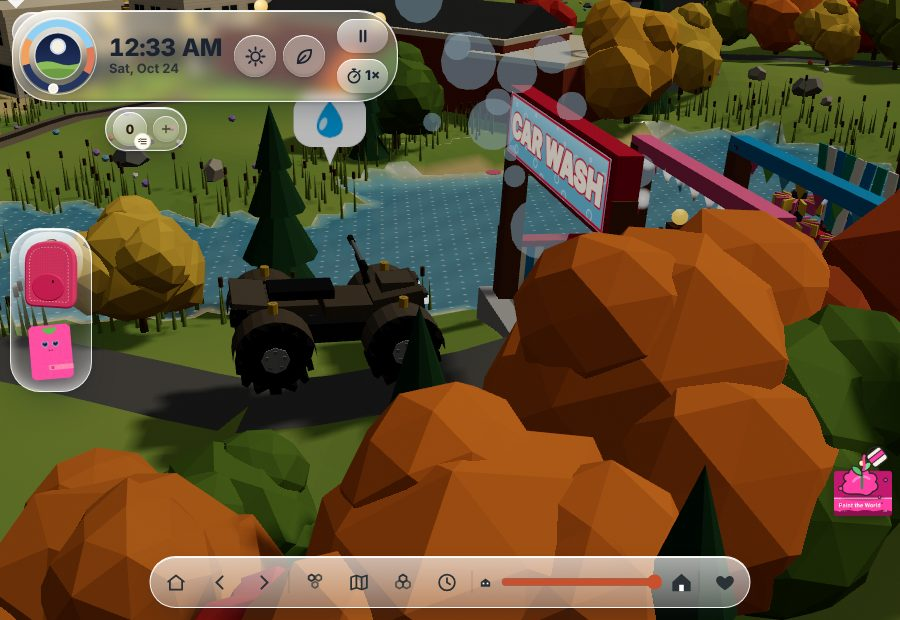
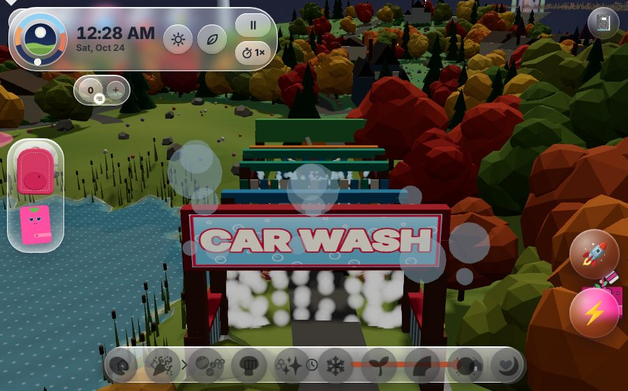
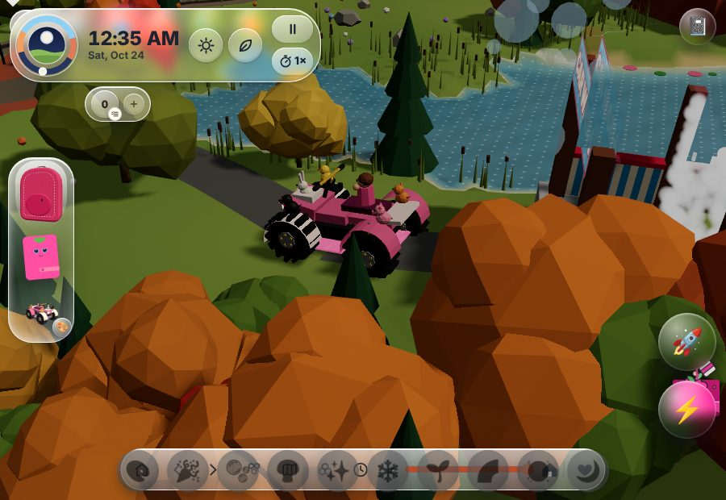
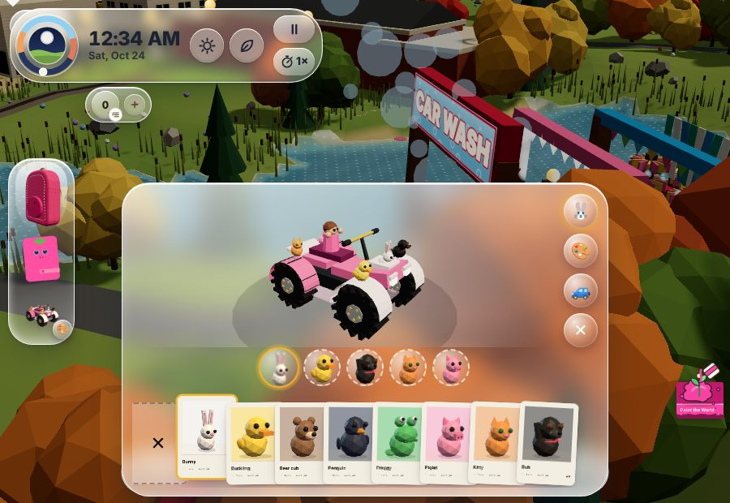

The Carwash: a four-minute minigame
Today's carwash is a five-second drive-through. This study makes it a four-minute wash in six stations, one song section each, in a bigger glass-sided tunnel you can see out of. Not built yet: this page is the plan.
What exists today (drive-through)




The four minutes
| Time | Station | You |
|---|---|---|
| 0:00 | Pull in | Line up on the rail, claps count you in |
| 0:15 | Pre-soak | Aim the wand, mud runs off |
| 0:46 | Foam | Lean to catch bubbles on the beat |
| 1:17 | Brushes | Scrub, dodge the swinging mitt |
| 2:03 | Rinse | Find the suds you missed |
| 2:34 | Wax and dry | Shine stripe, then tap with the claps |
| 3:05 | Detailing | Polish the toys and sparkle |
| 3:36 | Finale | Door lifts, photo flash, stars |
The song
An original disco-funk anthem, real produced audio and never MIDI, with a section for each station. It is inspired by 1970s carwash anthems and is not "Car Wash" by Rose Royce; the real record would need a licence, which is Evan's call.
Listen to the first two takes (four minutes each, real audio, instrumental):
Take 1
Take 2
Space and sight
A 110 m plot instead of 34 m, a slow conveyor, glass walls and open slats, and a seat camera with water running down the lens, cutting to the side and wheel cameras on the beat.
Score and replay
Zero to three Sparkle stars from how clean the buggy gets, beats caught and toys kept safe. Charms only: the Moon Buggy first, a golden sponge for three stars. The buggy keeps its real mud from driving the town, so every visit is a new job.
Full detail: docs/oracle/carwash/CARWASH_STUDY.md. Tour: yes, once playable (the first wash is the buggy's payoff).